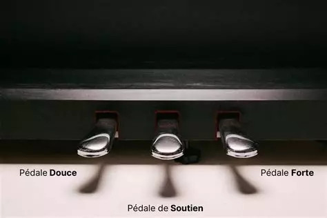

Sur un piano, il y a trois pédales. La première pédale, celle de gauche, appelé la pédale douce, sert à adoucir et étouffer le son des différentes notes. La deuxième pédale, celle du milieu, appelé la pédale de soutien, sert à faire vibrer et tenir les notes jouées au moment où elle est enfoncée jusqu'à ce qu'on relève le pied. La troisième pédale, celle de droite, appelé la pédale forte ou aussi "pédale de sustain", sert à faire vibrer toutes les notes plus longtemps. Mais existent-ils plusieurs type de piano ?
